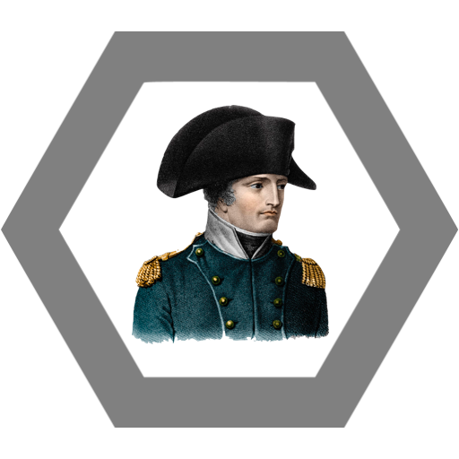

Stázka je zosobněním fráze "co je malé, to je hezké", ale radši to před ní neříkejte, páč je to trochu kuří oko a to, co vám za to udělá, neni nic malýho ani hezkýho (viz Ulti).

Neproniknutelné pole roztomilosti k sežrání
Stázka udělá ten výraz, co má na fotce, a protivník je naprosto odzbrojen, neschopný útoku a hlavně k němu naprosto nesvolný. Aura. Freeze protivníka 10s.
Mystická síla Vyšehradu
Stázka vstřebává léta dějin čišící z místa jejího bydliště a obrací je proti svému protivníkovi. Čím dál do minulosti jde, tím větší damage způsobí (1-9).
Kamufláž vlasové neobjevitelnosti
Stázka přijde s jinak barevnými vlasy a protivník ji nemůže poznat. Proto vyplýtvá všechny svoje spelly na falešné cíle a než se rechargne, Stázka ho rozdrtí.
Bezedný splávek (ne)opilosti
Stázka prohlásí, že je opilá, a zaúkoluje protivníka, aby jí zabránil pít dál. Jelikož je tento úkon naprosto neproveditelný, protivník je zaneprázdněn a vyčerpán. Damage 2/s po dobu maximálně 15s, pokud to protivník nevzdá dřív.

Ulti
Agresivní Napoleonizace. Pohár Stázčiny trpělivosti s posměváčky, kteří upozorňují na její tělesný vzrůst, přeteče a ona vybuchne. Tlaková vlna připraví všechny okolo o jejich vyvýšené posty. AOE 30 m.